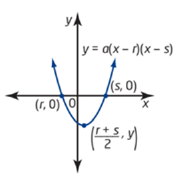
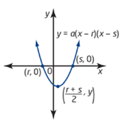

Zeroes Form
In the zeroes form, $sy=a(x-r)(x-s)$e , the x-intercepts are $s(r, 0)$e and $s(s, 0)$e , and the vertex is $s(\frac{r+s}{2}, y)$e .

In the zeroes form, $sy=a(x-r)(x-s)$e , the x-intercepts are $s(r, 0)$e and $s(s, 0)$e , and the vertex is $s(\frac{r+s}{2}, y)$e .
